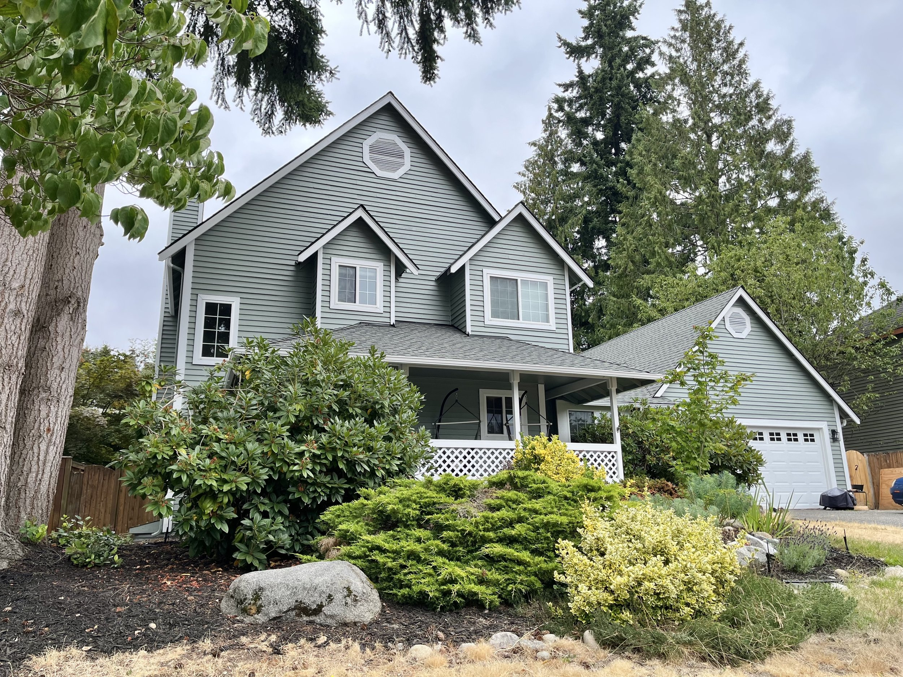
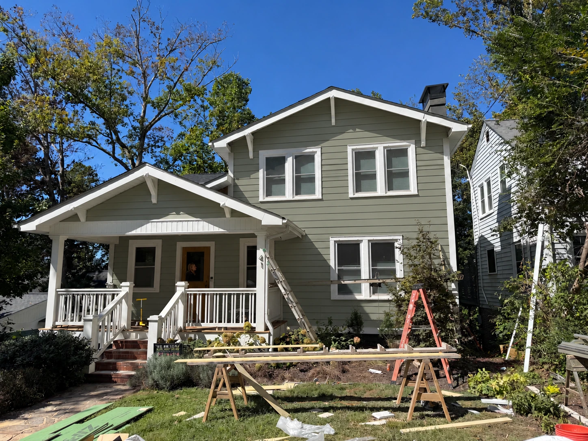
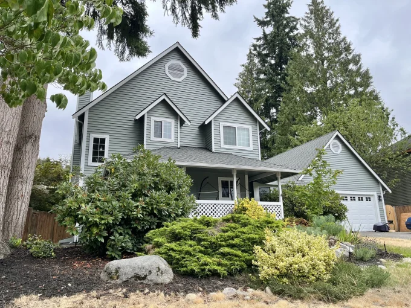
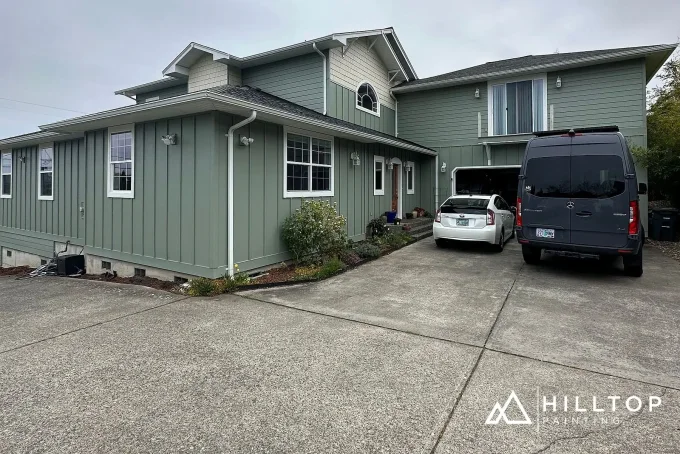
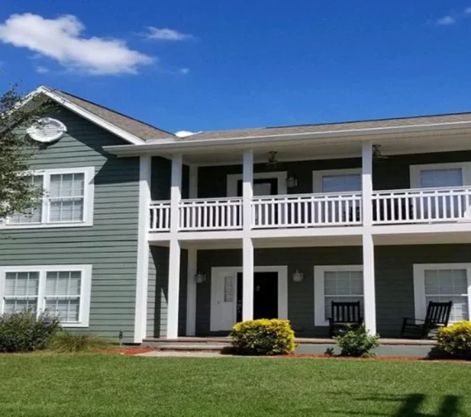
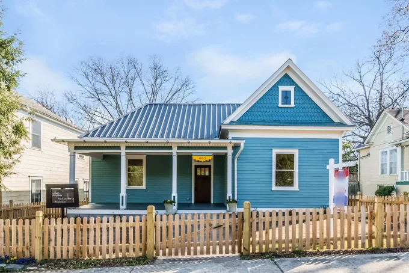
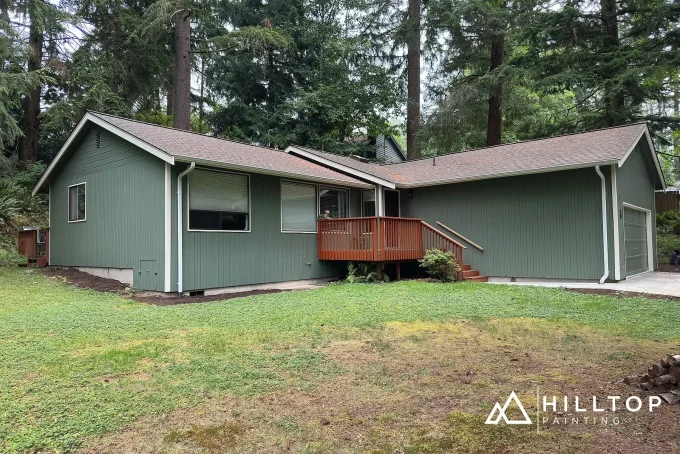
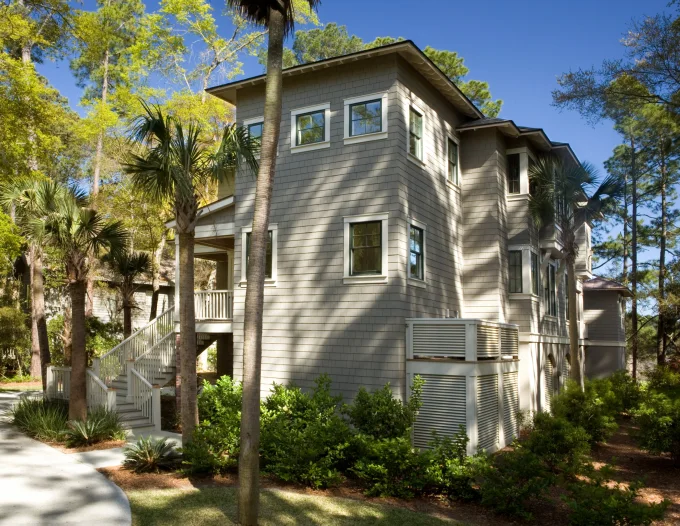

A study in exterior color
A color.
A house.
A different feeling.
Six shades of green and blue, out in the world. Explore real homes, changing light, and the details that make each color its own.
Find your color ↓
REAL CONTEXT
The house color studio
See the shortlist
on one house.
Switch between six paints and 22 appearances sampled from real photographs. Compare three views with new lap siding, white trim and a natural wood door.
Open the house preview →Illustrative renovation simulations. Photo samples include lighting and camera effects.
Renovation simulation · 6 paints / 3 viewsThe collection / 01—06
Start with a shade.
See it across houses, materials and light.
Every collection keeps the evidence close.

01Acacia Haze
A soft gray-green, seen in sunshine and shade.

02Evergreen Fog
Muted green with an earthy, quiet character.

03Retreat
A deeper green-gray for a grounded exterior.

04Moody Blue
A blue-green that shifts with the light.

05Dried Thyme
An herbal green alongside wood, stone and white.

06Studio Blue Green
A historic blue-green on porches and siding.
A little context goes a long way
More than a paint chip.
Homes, not mockups.
Explore the color on siding, stucco, doors and trim. Construction stages, television stills and uncertain examples are clearly labeled.
One color, many moods.
Sun, shade, materials and cameras change the way a color appears. Compare several projects before choosing a sample for your own home.
Follow the evidence.
Project sources, paint palettes and photo credits stay attached. Secondary color attributions are kept distinct from source-confirmed examples.